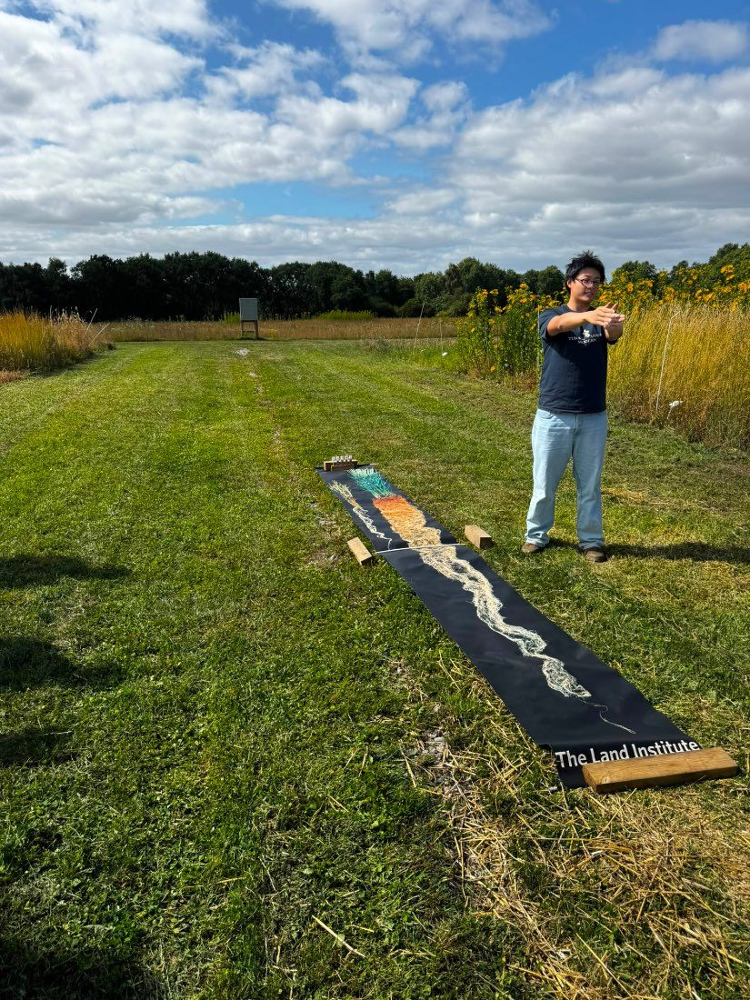

DeepWater
Digital twinning perennial traits for resilient agriculture
This project investigates how deep-root traits in perennial grain crops enhance water-use efficiency and resilience under variable climates.
Using advanced root imaging, deep-water sensing, and canopy monitoring, it generates high-resolution datasets on root–water dynamics. These data improve agricultural system models to predict performance across environments.
The findings will identify key traits and management strategies that balance productivity and sustainability, accelerating the domestication of perennial grains for climate-resilient food production.

Methods
Advanced root imaging
Deep-water sensing
Canopy monitoring
Agricultural system models